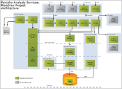
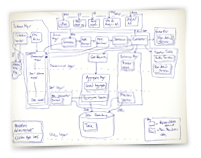

|  | ||
|
){kind=link}
|  | ||
|
A Mondrian OLAP System consists of four layers; working from the eyes of the end-user to the bowels of the data center, these are as follows: the presentation layer, the dimensional layer, the star layer, and the storage layer. (See figure 1.)
The presentation layer determines what the end-user sees on his or her monitor, and how he or she can interact to ask new questions. There are many ways to present multidimensional datasets, including pivot tables (an interactive version of the table shown above), pie, line and bar charts, and advanced visualization tools such as clickable maps and dynamic graphics. These might be written in Swing or JSP, charts rendered in JPEG or GIF format, or transmitted to a remote application via XML. What all of these forms of presentation have in common is the multidimensional 'grammar' of dimensions, measures and cells in which the presentation layer asks the question, and the OLAP server returns the answer.
The second layer is the dimensional layer. The dimensional layer parses, validates and executes MDX queries. A query is evaluted in multiple phases. The axes are computed first, then the values of the cells within the axes. For efficiency, the dimensional layer sends cell-requests to the aggregation layer in batches. A query transformer allows the application to manipulate existing queries, rather than building an MDX statement from scratch for each request. And metadata describes the the dimensional model, and how it maps onto the relational model.
The third layer is the star layer, and is responsible for maintaining an aggregate cache. An aggregation is a set of measure values ('cells') in memory, qualified by a set of dimension column values. The dimensional layer sends requests for sets of cells. If the requested cells are not in the cache, or derivable by rolling up an aggregation in the cache, the aggregation manager sends a request to the storage layer.
The storage layer is an RDBMS. It is responsible for providing aggregated cell data, and members from dimension tables. I describe below why I decided to use the features of the RDBMS rather than developing a storage system optimized for multidimensional data.
These components can all exist on the same machine, or can be distributed between machines. Layers 2 and 3, which comprise the Mondrian server, must be on the same machine. The storage layer could be on another machine, accessed via remote JDBC connection. In a multi-user system, the presentation layer would exist on each end-user's machine (except in the case of JSP pages generated on the server).
|
|
OLAP Servers are generally categorized according to how they store their data:
Three kinds of data need to be stored: fact table data (the transactional records), aggregates, and dimensions.
MOLAP databases store fact data in multidimensional format, but if there are more than a few dimensions, this data will be sparse, and the multidimensional format does not perform well. A HOLAP (hybrid OLAP) system solves this problem by leaving the most granular data in the relational database, but stores aggregates in multidimensional format.
Pre-computed aggregates are necessary for large data sets, otherwise certain queries could not be answered without reading the entire contents of the fact table. MOLAP aggregates are often an image of the in-memory data structure, broken up into pages and stored on disk. ROLAP aggregates are stored in tables. In some ROLAP systems these are explicitly managed by the OLAP server; in other systems, the tables are declared as materialized views, and they are implicitly used when the OLAP server issues a query with the right combination of columns in the group by clause.
The final component of the aggregation strategy is the cache. The cache holds pre-computed aggregations in memory so subsequent queries can access cell values without going to disk. If the cache holds the required data set at a lower level of aggregation, it can compute the required data set by rolling up.
The cache is arguably the most important part of the aggregation strategy because it is adaptive. It is difficult to choose a set of aggregations to pre-compute which speed up the system without using huge amounts of disk, particularly those with a high dimensionality or if the users are submitting unpredictable queries. And in a system where data is changing in real-time, it is impractical to maintain pre-computed aggregates. A reasonably sized cache can allow a system to perform adequately in the face of unpredictable queries, with few or no pre-computed aggregates.
Mondrian's aggregation strategy is as follows:
The general idea is to delegate unto the database what is the database's. This places additional burden on the database, but once those features are added to the database, all clients of the database will benefit from them. Multidimensional storage would reduce I/O and result in faster operation in some circumstances, but I don't think it warrants the complexity at this stage.
A wonderful side-effect is that because Mondrian requires no storage of its own, it can be installed by adding a JAR file to the class path and be up and running immediately. Because there are no redundant data sets to manage, the data-loading process is easier, and Mondrian is ideally suited to do OLAP on data sets which change in real time.
Mondrian provides an API for client applications to execute queries.
Since there is no widely universally accepted API for executing OLAP queries, Mondrian's primary API is proprietary; however, anyone who has used JDBC should find it familiar. The main difference is the query language: Mondrian uses a language called MDX ('Multi-Dimensional eXpressions') to specify queries, where JDBC would use SQL. MDX is described in more detail below.
The following Java fragment connects to Mondrian, executes a query, and prints the results:
import mondrian.olap.*;
import java.io.PrintWriter;
Connection connection = DriverManager.getConnection(
"Provider=mondrian;" +
"Jdbc=jdbc:mysql://localhost/foodmart;" +
"JdbcUser=foodmart;" +
"JdbcPassword=foodmart;" +
"Catalog=/WEB-INF/FoodMart.mondrian.xml;",
null,
false);
Query query = connection.parseQuery(
"SELECT {[Measures].[Unit Sales], [Measures].[Store Sales]} on columns," +
" {[Product].children} on rows " +
"FROM [Sales] " +
"WHERE ([Time].[1997].[Q1], [Store].[CA].[San Francisco])");
Result result = connection.execute(query);
result.print(new PrintWriter(System.out));
A Connection is created via a DriverManager, in a similar way to JDBC. A Query is analogous to a JDBC Statement, and is created by parsing an MDX string. A Result is analogous to a JDBC ResultSet; since we are dealing with multi-dimensional data, it consists of axes and cells, rather than rows and columns. Since OLAP is intended for data exploration, you can modify the parse tree contained in a query by operations such as drillDown and sort, then re-execute the query.
The API also presents the database schema as a set of objects: Schema, Cube, Dimension, Hierarchy, Level, Member. For more information about the Mondrian API, see the javadoc.
XML for Analysis is a standard for accessing OLAP servers via SOAP (Simple Object Access Protocol). This allows non-Java components like Microsoft Excel to run queries against Mondrian.
Mondrian included support for the JSR-069 ('JOLAP') proposed standard, but this support was removed in mondrian-2.3 when it became clear that the standard would never be ratified.
MDX is a language for querying multidimensional databases, in the same way that SQL is used to query relational databases. It was originally defined as part of the OLE DB for OLAP specification, and a similar language, mdXML, is part of the XML for Analysis specification.
Since you can read the specification online and there are some great books on MDX available, I won't describe the full MDX language. Mondrian's extensions to MDX are parameters and modified builtin functions.
A parameter is a named variable embedded in an MDX query. Every parameter has a default value, but you can supply a different value when you run the query.
Parameters are declared and used by using a special function, Parameter:
Parameter(<name>, <type>, <defaultValue>[, <description>])
The arguments of Parameter are as follows:
If you want to use a parameter more than once in a query, use the ParamRef function:
ParamRef(<name>)
The name argument must be the name of a parameter declared elsewhere in the query by calling the Parameter function.
The following query shows the top 10 brands in California, but you could change the Count parameter to show the top 5, or the Region parameter to show sales in Seattle:
SELECT {[Measures].[Unit Sales]} on columns,
TopCount([Product].[Brand].members,
Parameter("Count", NUMERIC, 10, "Number of products to show"),
(Parameter("Region", [Store], [Store].[USA].[CA]),
[Measures].[Unit Sales])) on rows
FROM Sales
You can list a query's parameters by calling Query.getParameters(), and change a parameter's value by calling Query.setParameter(String name, String value).
The StrToSet() and StrToTuple() functions take an optional parameter not present in the standard MDX versions of these functions, describing the hierarchy the result will belong to:
StrToSet(<String Expression>[, <Hierarchy>])
StrToTuple(<String Expression>[, <Hierarchy>])
Author: Julian Hyde; last modified, August 2006.
Version: $Id$
(log)
Copyright (C) 2001-2005 Julian Hyde
Copyright (C) 2005-2007 Pentaho
){kind=link}